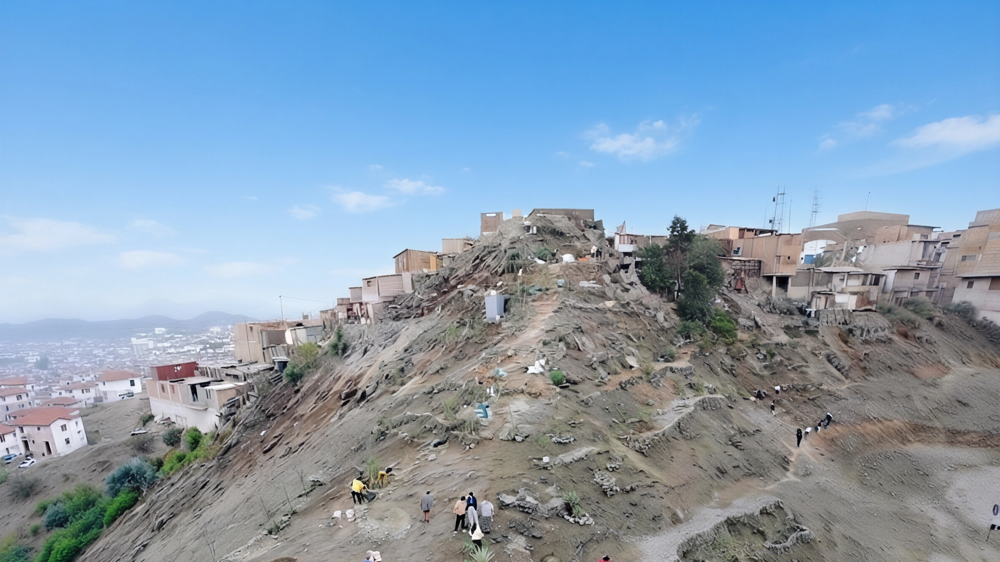

Leer el paisaje
Las pendientes, la roca y las características del terreno determinan dónde y cómo intervenir.

Proyecto 01 · Restauración ecológica
Un territorio árido que se transforma paso a paso: recuperando suelo, estableciendo vegetación y creando condiciones para que la vida vuelva a encontrar un lugar.
El desafío
El Proyecto Forestal Cerro La Milla se desarrolla en San Martín de Porres, Lima, sobre un terreno con condiciones difíciles para la vegetación: aridez, pendientes, roca expuesta y escasez de sustrato.
El proyecto comenzó el 19 de diciembre de 2021 y plantea una recuperación progresiva del territorio mediante acondicionamiento del terreno, manejo del suelo, incorporación de materia orgánica, establecimiento de vegetación y participación comunitaria.
La idea fundamental es sencilla, aunque el trabajo no lo sea: crear las condiciones para que un ecosistema pueda desarrollarse y mantenerse.
Datos publicados como referencia en mayo de 2026. El área total contemplada para la intervención alcanza 42 hectáreas.
Cómo se trabaja
Las pendientes, la roca y las características del terreno determinan dónde y cómo intervenir.
La roca disponible se aprovecha para acondicionar el terreno y generar espacios capaces de sostener la recuperación.
Hojas, residuos vegetales, compost y otros aportes orgánicos ayudan a mejorar las condiciones del sustrato.
La vegetación se establece progresivamente y requiere mantenimiento para superar las condiciones adversas del entorno.
El proceso
Comprender el terreno antes de intervenir.
Estabilizar y construir superficies de trabajo.
Incorporar materia orgánica y cobertura.
Introducir y mantener vegetación adaptada al proceso.
Registrar cómo responde la biodiversidad.
Biodiversidad
La restauración no termina en la plantación. Uno de los indicadores más interesantes del proceso es la aparición y observación de organismos asociados a un ambiente que empieza a ofrecer nuevos recursos y refugios.
Las publicaciones sobre el proyecto describen la presencia de aves, insectos polinizadores, mariposas, colibríes, murciélagos y geckos limeños, entre otros organismos.
La presencia de fauna se interpreta como parte de la respuesta observable del entorno. No significa que el ecosistema esté terminado: significa que el territorio comienza a ofrecer nuevas posibilidades de vida.
Participación
Las jornadas de voluntariado forman parte del trabajo del Cerro La Milla. Además del trabajo directo en el terreno, la iniciativa recibe aportes de materia orgánica y otros materiales útiles para la recuperación.
Escríbenos para conocer las próximas jornadas, formas de colaboración y necesidades del proyecto.
Galería
Fuentes de referencia: información publicada sobre el Proyecto Forestal Cerro La Milla y material respaldado por Emiliano Cacciavillani. Los datos dinámicos de superficie, árboles, especies y voluntariado se presentan con fecha de referencia para facilitar futuras actualizaciones.
Legado Botánico
El Cerro La Milla todavía está en construcción. Su historia también.
← Volver a Proyectos